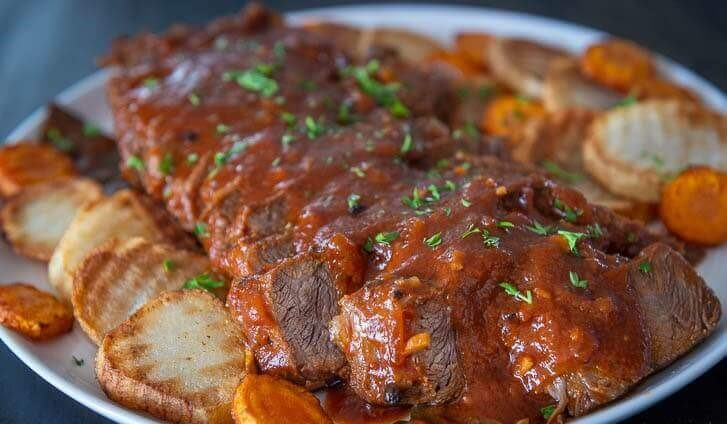

Beef Asado Recipe
What is Beef Asado?
Beef Asado is a piquant Filipino beef stew version. Try not to confuse this with Sweet Chinese Asado. This dish originated from Central Luzon in the Philippines. It is usually served during special occasions. However, you can also make it during regular days by following our simple and easy recipe below.
Ingredients
3 1/2 lbs. beef chuck
1 piece Knorr Beef Cube
8 ounces tomato sauce
3 cups water
6 tablespoons soy sauce
1 1/2 tablespoons white vinegar
2 teaspoons whole peppercorn
4 pieces bay leaves
1/2 piece lemon
2 tablespoons tomato paste
3 tablespoons butter
1/2 cup cooking oil
1 piece onion
4 cloves garlic
Instructions / How to Cook
1. Combine beef, crushed peppercorn, soy sauce, vinegar, dried bay leaves, lemon, and tomato sauce. Mix well. Marinate beef or at least 30 minutes.
2. Put the marinated beef in a cooking pot along with remaining marinade. Add water. Let boil.
3. Add Knorr Beef Cube. Stir. Cover the pot and cook for 40 minutes in low heat.
4. Turn the beef over. Add tomato paste. Continue cooking until beef tenderizes. Set aside.
5. Heat oil in pan. Fry the potato until it browns. Turn over and continue frying the opposite side. Remove from the pan and place on a clean plate. Do the same with the carrots.
6. Save 3 tablespoons of cooking oil from the pan where the potato was fried. Saute onion and garlic until onion softens.
7. Pour-in the sauce from the beef stew. Let boil. Add the beef. Cook for 2 minutes.
8. Add butter and let it melt. Continue cooking until the sauce reduces to half.
9. Remove the beef from the pan. Slice into serving pieces. Arrange on a serving plate with fried potato and carrot. Top with remaining sauce.
10. Serve warm with rice. Share and enjoy!